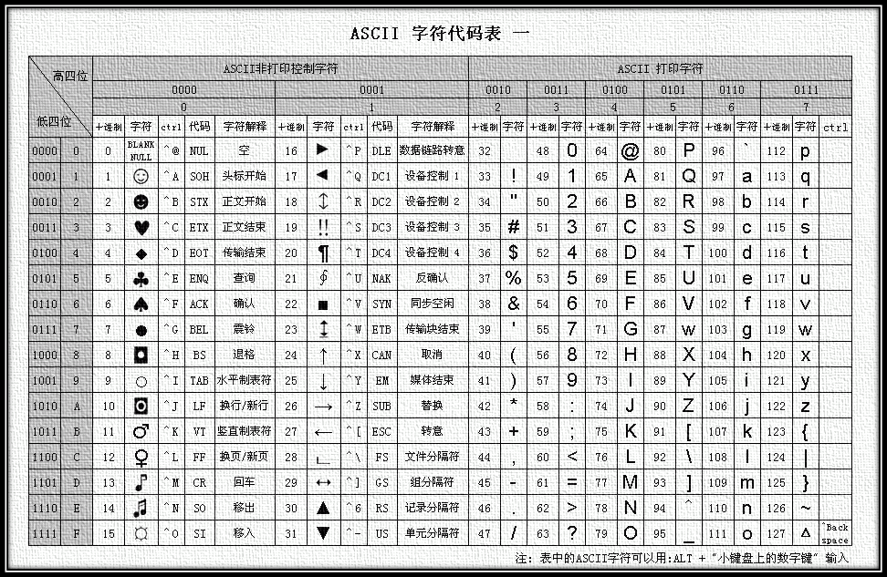

Charset and Character Encoding — Knowledge every software developer should unconditionally master!
I believe everyone has encountered opening a webpage and seeing a bunch of garbled text? Remember the message header fields in HTTP such as Accept-Charset, Accept-Encoding, Accept-Language, Content-Encoding, Content-Language? These are what we will discuss next.
Table of Contents:
- 1. Basic Knowledge
- 2. Common Character Sets and Character Encodings
- 2.1. ASCII Character Set & Encoding
- 2.2. GBXXXX Character Set & Encoding
- 2.3. BIG5 Character Set & Encoding
- 3. Unicode Character Set & UTF Encoding
- 3.1.UCS & UNICODE
- 3.2.UTF-32
- 3.3.UTF-16
- 3.4.UTF-8
- 4.Accept-Charset/Accept-Encoding/Accept-Language/Content-Type/Content-Encoding/Content-Language
- 5. References & Further Reading
1. Basic Knowledge
Information stored in a computer is represented by binary numbers; the English characters, Chinese characters, and other characters we see on the screen are the result of converting binary numbers. In simple terms, the rules by which characters are stored in a computer, such as what 'a' is represented by, is called "encoding"; conversely, parsing and displaying the binary numbers stored in a computer is called "decoding", similar to encryption and decryption in cryptography. During decoding, if the wrong decoding rules are used, 'a' may be parsed as 'b' or as garbled text.
Character Set (Charset): It is a collection of all abstract characters supported by a system. Characters are a general term for various texts and symbols, including national scripts, punctuation marks, graphic symbols, numbers, etc.
Character Encoding: It is a set of rules that can pair a collection of characters from a natural language (such as an alphabet or syllabary) with another collection (such as numbers or electrical pulses). That is, it establishes a correspondence between a symbol set and a numerical system, and it is a fundamental technology in information processing. People usually use symbol sets (generally text) to express information. Computer-based information processing systems use combinations of different states of components (hardware) to store and process information. Combinations of different states of components can represent numbers in a numerical system. Therefore, character encoding is the conversion of symbols into numbers in a numerical system that a computer can accept, called digital codes.
2. Common Character Sets and Character Encodings
Common character set names: ASCII character set, GB2312 character set, BIG5 character set, GB18030 character set, Unicode character set, etc. To accurately process text in various character sets, computers need to perform character encoding so that the computer can recognize and store various texts.
2.1. ASCII Character Set & Encoding
ASCII (American Standard Code for Information Interchange) is a computer encoding system based on the Latin alphabet. It is mainly used to display modern English, and its extended version EASCII can barely display other Western European languages. It is currently the most common single-byte encoding system (but shows signs of being caught up by Unicode) and is equivalent to the international standard ISO/IEC 646.
ASCII Character Set: It mainly includes control characters (carriage return, backspace, line feed, etc.); displayable characters (English uppercase and lowercase characters, Arabic numerals, and Western symbols).
ASCII Encoding: The rules for converting the ASCII character set into numbers in a numerical system that a computer can accept. It uses 7 bits to represent one character, for a total of 128 characters; however, a 7-bit encoded character set can only support 128 characters. To represent more commonly used European characters, ASCII was extended. The extended ASCII character set uses 8 bits to represent one character, for a total of 256 characters. The mapping rules from the ASCII character set to numeric codes are shown in the following figure:

Figure 1 ASCII encoding table

Figure 2 Extended ASCII encoding table
ASCII's biggest drawback is that it can only display 26 basic Latin letters, Arabic numerals, and British punctuation marks, so it can only be used to display modern American English (and when dealing with loanwords in English such as naïve, café, élite, etc., all accent marks have to be removed, even if doing so violates spelling rules). EASCII, although it solves the display problem for some Western European languages, is still helpless for many other languages. Therefore, Apple computers have now abandoned ASCII and switched to Unicode.
2.2. GBXXXX Character Set & Encoding
At the time of the invention of the computer and for a long time afterward, it was only used in the United States and some developed Western countries, and ASCII satisfied users' needs well. But when China also got computers, in order to display Chinese, it was necessary to design a set of encoding rules to convert Chinese characters into numbers in a numerical system that computers can accept.
Chinese experts removed the strange symbols after 127 (i.e., EASCII) and stipulated: a character less than 127 has the same meaning as before, but when two characters greater than 127 are joined together, they represent a Chinese character. The first byte (called the high byte) ranges from 0xA1 to 0xF7, and the second byte (low byte) ranges from 0xA1 to 0xFE. In this way, we can combine about 7,000+ simplified Chinese characters. In these encodings, mathematical symbols, Roman and Greek letters, and Japanese kana were also included, and even the numbers, punctuation, and letters that already existed in ASCII were all re-encoded with two-byte lengths. These are commonly called "full-width" characters, while those originally below 127 are called "half-width" characters.
The above encoding rules are GB2312. GB2312 or GB2312-80 is the Chinese national standard simplified Chinese character set, full name "Code of Chinese Graphic Character Set for Information Interchange · Basic Set", also known as GB0, issued by the National Bureau of Standards of China and implemented on May 1, 1981. GB2312 encoding is prevalent in Mainland China; Singapore and other places also use this encoding. Almost all Chinese systems and internationalized software in Mainland China support GB2312. The emergence of GB2312 basically met the needs of computer processing of Chinese characters, and the Chinese characters it includes cover 99.75% of the usage frequency in Mainland China. For rare characters appearing in personal names, ancient Chinese, etc., GB2312 cannot handle them, which led to the later appearance of GBK and GB 18030 Chinese character sets. The following figure shows the beginning part of GB2312 encoding (since it is very large, only the beginning part is listed; for details, see the GB2312 Simplified Chinese encoding table):

Figure 3 Beginning part of the GB2312 encoding table
Since GB 2312-80 only includes 6,763 Chinese characters, many Chinese characters were not included, such as some characters simplified after the introduction of GB 2312-80 (e.g., "啰"), some characters used in personal names (e.g., "镕" from former Chinese Premier Zhu Rongji), traditional Chinese characters used in Taiwan and Hong Kong, and Chinese characters used in Japanese and Korean, etc. Therefore, Microsoft took advantage of the unused encoding space in GB 2312-80 and included all characters of GB 13000.1-93 to develop the GBK encoding. According to Microsoft documentation, GBK is an extension of GB2312-80, that is, an extension of the CP936 code page (previously CP936 was exactly the same as GB 2312-80), first implemented in the Simplified Chinese version of Windows 95. Although GBK includes all characters of GB 13000.1-93, the encoding method is different. GBK itself is not a national standard; it was only published as a "technical specification guidance document" by the Standardization Department of the former State Bureau of Technical Supervision and the Science, Technology and Quality Supervision Department of the Ministry of Electronics Industry. The original GB13000 was never adopted by the industry, and the subsequent national standard GB18030 is technically compatible with GBK rather than GB13000.
GB 18030, full name: National Standard GB 18030-2005 "Information Technology — Chinese Coded Character Set", is the current latest internal code character set of the People's Republic of China. It is a revision of GB 18030-2000 "Information Technology — Code of Chinese Graphic Character Set for Information Interchange — Expansion of the Basic Set". It is fully compatible with GB 2312-1980, basically compatible with GBK, supports all unified Chinese characters in GB 13000 and Unicode, and contains a total of 70,244 Chinese characters. GB 18030 mainly has the following characteristics:
- Same as UTF-8, it uses multi-byte encoding, and each character can consist of 1, 2, or 4 bytes.
- The encoding space is enormous, capable of defining up to 1.61 million characters.
- It supports the scripts of ethnic minorities in China, without needing to use the private use area.
- The scope of collected Chinese characters includes traditional Chinese characters as well as Japanese and Korean Chinese characters (Han characters).

Figure 4 Overall structure of GB18030 encoding
The first version of this specification was drafted by the Institute of Electronic Industry Standardization of the Ministry of Information Industry of the People's Republic of China, and issued by the State Bureau of Quality and Technical Supervision on March 17, 2000. The current version was issued by the General Administration of Quality Supervision, Inspection and Quarantine and the Standardization Administration of China on November 8, 2005, and implemented on May 1, 2006. This specification is mandatory for all software products within China.
2.3. BIG5 Character Set & Encoding
. Unicode is constantly expanding; each new version inserts more new characters. Up to the current sixth version, Unicode already contains more than 100,000 characters (in 2005, Unicode's 100,000th character was adopted and recognized as one of the standards), a set of code charts usable as visual references, a set of encoding methods and a standard character encoding, and an enumeration containing character properties such as superscripts and subscripts, etc. The Unicode Consortium is operated by a non-profit organization and leads Unicode's further development. Its goal is to replace existing character encoding schemes with Unicode encoding schemes, especially because existing schemes have only limited space and incompatibility issues in multilingual environments.
Big5 is a double-byte character set that uses a double-eight-bit storage method, placing one character in two bytes. The first byte is called the "high byte," and the second byte is called the "low byte." The "high byte" uses 0x81-0xFE, and the "low byte" uses 0x40-0x7E and 0xA1-0xFE. In Big5 partitions:
| 0x8140-0xA0FE | Reserved for user-defined characters (character creation zone). |
| 0xA140-0xA3BF |
Punctuation, Greek letters, and special symbols, including 0xA259-0xA261, which contain nine measurement Chinese characters: 兙兛兞兝兡兣嗧瓩糎. |
| 0xA3C0-0xA3FE | Reserved. This zone is not open for user-defined characters. |
| 0xA440-0xC67E | Common Chinese characters, sorted first by stroke count, then by radical. |
| 0xC6A1-0xC8FE | Reserved for user-defined characters (character creation zone). |
| 0xC940-0xF9D5 | Less common Chinese characters, also sorted first by stroke count, then by radical. |
| 0xF9D6-0xFEFE | Reserved for user-defined characters (character creation zone). |
3. Unicode Character Set & UTF Encoding
The great idea Unicode— Unicode deserves its own separate discussion
Like the Celestial Empire, when computers spread to various countries around the world, in order to fit local languages and characters, encoding schemes similar to GB232/GBK/GB18030/BIG5 were designed and implemented. This way, each region has its own system; locally it works fine, but once on a network, due to incompatibility, garbled characters appear when accessing each other's data.
To solve this problem, a great idea was born—Unicode. The Unicode encoding system is designed to represent any character of any language. It uses 4-byte numbers to represent each letter, symbol, or ideograph. Each number represents a unique symbol used in at least one language. (Not all numbers are used, but the total already exceeds 65,535, so two-byte numbers are not enough.) Characters shared by several languages are usually encoded with the same number, unless there is a reasonable etymological reason not to do so. Apart from such cases, each character corresponds to a number, and each number corresponds to a character. There is no ambiguity. No need to record "mode." U+0041 always represents 'A', even if the language does not have the character 'A'.
In the field of computer science, Unicode (统一码, 万国码, 单一码, 标准万国码) is an industry standard that enables computers to represent systems of dozens of scripts from around the world. Unicode is developed based on the Universal Character Set standard and is also published in book form
（It can be understood this way: Unicode is the character set; UTF-32/UTF-16/UTF-8 are three character encoding schemes.）
3.1.UCS & UNICODE
Universal Character Set（Universal Character Set，UCS) is formulated by ISOISO 10646(orISO/IEC 10646) standard-defined standard character set.
Around 1991, participants in both projects realized that the world did not need two incompatible character sets. So they began merging their work results and collaborating to create a single encoding table. Starting from Unicode 2.0, Unicode adopted the same character repertoire and code points as ISO 10646-1; ISO also promised that ISO 10646 would not assign values for UCS-4 encoding beyond U+10FFFF, in order to keep the two consistent. Both projects still exist and independently publish their own standards. But the Unicode Consortium and ISO/IEC JTC1/SC2 have agreed to keep the code tables of the two standards compatible and to closely coordinate any future expansions. At publication, Unicode generally adopts the most common glyphs for the relevant code points, while ISO 10646 generally adopts the Century typeface as much as possible.
3.2.UTF-32
The encoding scheme described above, which uses 4-byte numbers to represent each letter, symbol, or ideograph, where each number represents a unique symbol used in at least one language, is called UTF-32. UTF-32 is also known asUCS-4a protocol for encoding Unicode characters that uses 4 bytes for each character. In terms of space, it is very inefficient.
This method has its advantages; the most important is that the Nth character in a string can be located in constant time, because the Nth character starts at the 4×Nth byte. Although it may seem convenient to use fixed-length bytes for each code point, it is not as widely used as other Unicode encodings.
3.3.UTF-16
Although there are many Unicode characters, in reality most people do not use characters beyond the first 65,535. Therefore, another Unicode encoding method was created, called UTF-16 (because 16 bits = 2 bytes). UTF-16 encodes characters in the range 0–65,535 as 2 bytes. If you really need to represent those rarely used Unicode characters in the "astral plane" beyond the 65,535 range, some tricky techniques are needed. The most obvious advantage of UTF-16 encoding is that it is twice as space-efficient as UTF-32, because each character only needs 2 bytes to store (except beyond the 65,535 range) rather than 4 bytes in UTF-32. Also, if we assume a string does not contain any astral plane characters, we can still find the Nth character in constant time; until that assumption fails, this is always a good inference. Its encoding method is:
- If the character code U is less than 0x10000, that is, within decimal 0 to 65,535, it is directly represented by two bytes;
- If the character code U is greater than 0x10000, since the maximum Unicode encoding range is 0x10FFFF, there are 0xFFFFF codes between 0x10000 and 0x10FFFF, meaning only 20 bits are needed to represent these codes. Let U' represent the value between 0 and 0xFFFFF. Take the first 10 bits as the high bits and perform a logical OR with the 16-bit value 0xD800; take the last 10 bits as the low bits and perform a logical OR with 0xDC00. The resulting 4 bytes constitute the encoding of U.
There are other less obvious disadvantages to the UTF-32 and UTF-16 encoding methods. Different computer systems store bytes in different orders. This means that the character U+4E2D under UTF-16 encoding may be stored as 4E 2D or 2D 4E, depending on whether the system uses big-endian or little-endian.(For UTF-32 encoding, there are even more possible byte arrangements.)As long as the document does not leave your computer, it is still safe—different programs on the same computer use the same byte order. But when we need to transfer this document between systems, perhaps on the World Wide Web, we need a method to indicate how our bytes are currently stored. Otherwise, the computer receiving the document cannot know whether the two bytes 4E 2D represent U+4E2D or U+2D4E.
To solve this problem, the multibyte Unicode encoding methods define a "Byte Order Mark," which is a special non-printing character that you can include at the beginning of a document to indicate the byte order you are using. For UTF-16, the byte order mark is U+FEFF. If you receive a UTF-16 encoded document that starts with the bytes FF FE, you can determine that its byte order is one way; if it starts with FE FF, you can determine that the byte order is reversed.
3.4.UTF-8
UTF-8 (8-bit Unicode Transformation Format) is a variable-length character encoding (variable-length code) for Unicode, and it is also a prefix code. It can be used to represent any character in the Unicode standard, and the first byte of its encoding is still compatible with ASCII, which allows software that originally handled ASCII characters to continue to be used without modification or with only minor modifications. Therefore, it has gradually become the preferred encoding in email, web pages, and other applications that store or transmit text. The Internet Engineering Task Force (IETF) requires all Internet protocols to support UTF-8 encoding.
UTF-8 uses one to four bytes to encode each character:
- 128 US-ASCII characters need only one byte to encode (Unicode range from U+0000 to U+007F).
- 2. Latin with diacritical marks, Greek, Cyrillic, Armenian, Hebrew, Arabic, Syriac, and Thaana letters require two-byte encoding (Unicode range U+0080 to U+07FF).
- Other characters in the Basic Multilingual Plane (BMP) (which includes most commonly used characters) use three-byte encoding.
- Characters in other rarely used Unicode supplementary planes use four-byte encoding.
It is very efficient in handling frequently used ASCII characters. In handling extended Latin character sets, it is also not inferior to UTF-16. For Chinese characters, it is better than UTF-32. At the same time, (you'll have to trust me on this one, because I don't intend to show you the math behind it.) Due to the nature of bit operations, UTF-8 no longer has the byte order problem. A document encoded in UTF-8 is the same bitstream across different computers.
In general, in a Unicode string it is impossible to determine the length needed to display it from the number of code points, or the position where the cursor should be placed in the text buffer after displaying the string; combining characters, variable-width fonts, non-printable characters, and right-to-left text are all contributing factors. So although the relationship between the number of characters and the number of code points in UTF-8 strings is more complex than in UTF-32, in practice there are rarely cases where it makes a difference.
Advantages
- UTF-8 is a superset of ASCII. Because a pure ASCII string is also a valid UTF-8 string, existing ASCII text does not need conversion. Software designed for traditional extended ASCII character sets can usually work with UTF-8 without modification or with very little modification.
- Sorting UTF-8 using standard byte-oriented sorting routines yields the same results as sorting based on Unicode code points. (Although this is only of limited usefulness, because it is unlikely that there is a still-acceptable character ordering in any particular language or culture.)
- Both UTF-8 and UTF-16 are standard encodings for Extensible Markup Language (XML) documents. All other encodings must be specified through explicit or textual declaration.
- Any byte-oriented string search algorithm can be used on UTF-8 data (as long as the input consists only of complete UTF-8 characters). However, caution must be taken with regular expressions or other constructs that contain character counting.
- UTF-8 strings can be reliably identified by a simple algorithm. That is, the probability that a string in any other encoding appears as valid UTF-8 is very low, and it decreases as the string length grows. For example, the character values C0, C1, F5 to FF never appear. For better reliability, regular expressions can be used to detect illegal overlong and surrogate values (seeW3 FAQ: Multilingual Formsthe regular expression for validating UTF-8 strings on).
Disadvantages
Because each character is encoded using a different number of bytes, finding the Nth character in a string is an O(N) complexity operation — that is, the longer the string, the more time is needed to locate a particular character. At the same time, bit manipulation is also required to encode characters into bytes and decode bytes into characters.
4.Accept-Charset/Accept-Encoding/Accept-Language/Content-Type/Content-Encoding/Content-Language
In HTTP, the message headers related to character set and character encoding are Accept-Charset/Content-Type; in addition, the main distinction among Accept-Charset/Accept-Encoding/Accept-Language/Content-Type/Content-Encoding/Content-Language is:
Accept-Charset: The browser declares the character set it accepts. These are the various character sets and character encodings introduced earlier in this article, such as gb2312, utf-8 (usually when we say Charset, it includes the corresponding character encoding scheme);
Accept-Encoding: The browser declares the encoding methods it accepts, usually specifying compression methods, whether compression is supported, and which compression methods are supported (gzip, deflate). (Note: this is not just character encoding);
Accept-Language: The browser declares the language it accepts. The difference between language and character set: Chinese is a language, and Chinese has multiple character sets, such as big5, gb2312, gbk, etc.;
Content-Type: The WEB server tells the browser the type and character set of the object in its response. For example: Content-Type: text/html; charset='gb2312'
Content-Encoding: The WEB server indicates which compression method (gzip, deflate) it used to compress the object in the response. For example: Content-Encoding: gzip
Content-Language: The WEB server tells the browser the language of the object in its response.
5. References & Further Reading
- Baidu Baike. Character Set.http://baike.baidu.com/view/51987.htm, 2010-12-28
- Wikipedia. Character Encoding.http://zh.wikipedia.org/wiki/%E5%AD%97%E7%AC%A6%E7%BC%96%E7%A0%81, 2011-1-5
- Wikipedia. ASCII.http://zh.wikipedia.org/wiki/ASCII, 2011-4-5
- Wikipedia. GB2312.http://zh.wikipedia.org/wiki/GB_2312, 2011-3-17
- Wikipedia. GB18030.http://zh.wikipedia.org/wiki/GB_18030, 2010-3-10
- Wikipedia. GBK.http://zh.wikipedia.org/wiki/GBK, 2011-3-7
- Wikipedia. Unicode.http://zh.wikipedia.org/wiki/Unicode, 2011-4-30
- Laruence. Detailed Explanation of Character Encoding (Basics).http://www.laruence.com/2009/08/22/1059.html, 2009-8-22
- Jan Hunt. Character Sets and Encoding for Web Designers - UCS/UNICODE. http://www.uninetnews.com/other_standards/charset.php
Author: Wu Qin
Source: http://www.cnblogs.com/skynet/archive/2011/05/03/2035105.html
Click me to share notes
<p style="font-size:14px;">Notes must be an extension of the content of this article!</p><br> <p style="font-size:12px;"><a href="../tougao.html" target="_blank">For article submission, click here</a></p> <p style="font-size:14px;"><a href="./runoob-user-test-intro.html" target="_blank">How to obtain a registration invitation code</a></p> <h3 class="text-muted"><i class="fa fa-info-circle" aria-hidden="true"></i> You must <a href=".." class="runoob-pop">log in</a> before sharing notes!</h3> <p><a href="./runoob-user-test-intro.html" target="_blank">How to obtain a registration invitation code</a></p>